Using calmr in R
Ingredients
To successfully simulate you only need a data.frame specifying the groups, phases, and trials of the experiment, and (optionally) a data.frame with salience parameters for all the stimuli in the experiment.
The design data.frame
In the design data.frame, we specify our experimental design. A few rules about the this data.frame:
- Each row represents a group.
- Its first column contains the group labels.
- The remaining columns are organized in pairs. The first column in each pair specifies the trials to give in the phase, whereas the second column in each pair specifies whether the trials within that phase should be randomized.
Let’s build a design matrix for a blocking experiment.
my_blocking <- data.frame(Group = c("Exp", "Control"),
Phase1 = c("10A>(US)", "10C>(US)"),
R1 = c(FALSE, FALSE),
Phase2 = c("10AB>(US)", "10AB>(US)"),
R2 = c(FALSE, FALSE),
Test = c("1A#/1B#", "1A#/1B#"),
R3 = c(FALSE, FALSE))
my_blocking
#> Group Phase1 R1 Phase2 R2 Test R3
#> 1 Exp 10A>(US) FALSE 10AB>(US) FALSE 1A#/1B# FALSE
#> 2 Control 10C>(US) FALSE 10AB>(US) FALSE 1A#/1B# FALSEA few observations about the trial notation:
- Trials are preceded by a number. That number represents the number of times that trial will be given in each phase. “10A>(US)” means that the “A>(US)” trial will be given 10 times.
- The presence and absence of the unconditioned stimulus is not denoted with the traditional “+” and “-” symbols. Instead, here we use parenthesis to denote “complex” stimuli. These can be thought of as an element with a complex name (i.e., with more than one character). As such, “(US)” specifies a single element to represent the US.
- In the same vein, multiple characters with no parentheses denote individual elements. For example, “AB” implies the presence of two stimuli, A and B.
- The “>” character is used as a separator of the “expectations” and “correction” steps within the trial. “10A>(US)” means that the model generates an expectation with A only, but learns from the co-occurence of A and the US.
- The “/” character is used as a trial separator (it does not imply randomization by itself). Thus, “1A/1B” specifies that a single “A” trial and a single “B” trial will be given during that phase. Recall that randomization of trials within a phase is specified by the column after it (above, R1, R2, and R3).
- The “#” character is used to denote probe trials. In contrast to real life, probe trials here entail no update of the model’s associations. As such, probe trials can be used to track the development of key associations, with no repercussion to what the model learns on normal training trials.
If you want to check if your trials string will work with the
simulator, you can use trial_parser. Check
??trial_parser for more information. The function returns a
list with a lot of information, so let’s print only some of the
fields.
trial <- trial_parser("AB/10AC") #not specifying a number of AB trials. Bad practice!
trial[c("trial_names", "trial_repeats")]
#> $trial_names
#> [1] "AB" "AC"
#>
#> $trial_repeats
#> [1] 1 10
trial <- trial_parser("10AB(AB)(US)") #considering a configural cue for elements AB
trial[c("unique_nominal_stimuli")]
#> $unique_nominal_stimuli
#> [1] "A" "B" "AB" "US"Picking a model and the parameters data.frame
You can run a simulation with only a design data.frame (the
simulation function will use default salience values for the stimuli and
even the model!). However, you might want to run a model other than the
default. To get the models currently supported, you can call
supported_models(). After choosing a model, we can set
specific salience values for the stimuli in our experiment in parameters
data.frame. Just like the design data.frame, the parameters data.frame
has to follow a specific format. We can get a data.frame with default
values via get_model_params, and then modify specific
values by hand.
supported_models()
#> [1] "HDI2020" "HD2022" "RW1972" "RAND"
my_pars <- get_model_params(my_blocking, model = "HD2022")
my_pars$alphas[my_pars$stimulus == "US"] <- .4
my_pars
#> stimulus alphas
#> 1 A 0.2
#> 2 US 0.4
#> 3 B 0.2
#> 4 C 0.2Additional options
The final ingredient is a list with simulation options. We can get a
default one with get_exp_opts, and modify them
accordingly.
my_opts <- get_exp_opts()
my_opts$iterations <- 3
my_opts
#> $iterations
#> [1] 3
#>
#> $miniblocks
#> [1] TRUESimulating
And we can finally simulate the model with `run_experiment``. By default, the function returns a list with aggregated data. Let’s see.
my_sim <- run_experiment(design_df = my_blocking,
param_df = my_pars,
options = my_opts,
model = "HD2022")
my_sim
#> # A tibble: 6 x 8
#> # Rowwise:
#> model iteration group experience mapping alphas mod_data
#> <chr> <int> <chr> <list> <list> <list> <list>
#> 1 HD2022 1 Control <df [22 x 5]> <named list [9]> <dbl [4]> <CalmrMdl>
#> 2 HD2022 1 Exp <df [22 x 5]> <named list [9]> <dbl [3]> <CalmrMdl>
#> 3 HD2022 2 Control <df [22 x 5]> <named list [9]> <dbl [4]> <CalmrMdl>
#> 4 HD2022 2 Exp <df [22 x 5]> <named list [9]> <dbl [3]> <CalmrMdl>
#> 5 HD2022 3 Control <df [22 x 5]> <named list [9]> <dbl [4]> <CalmrMdl>
#> 6 HD2022 3 Exp <df [22 x 5]> <named list [9]> <dbl [3]> <CalmrMdl>
#> # ... with 1 more variable: parsed_mod_responses <list>Plotting
But, we rarely want the raw data. If you are like me, you will want
to see some plots. Let’s use plot function with the
different plots that the package (and the model) supports by default. We
can get the supported plots via supported_plots(model),
where model is the string of the model we used.
supported_plots("HD2022")
#> [1] "as" "acts" "rs" "vs"Here they are, paired side by side:
stimulus-specific responding (simple)
The plots below show responding across phases (left to right panels, and trials within). Note, these show the sum of R values (i.e., overall level of responding) per stimulus (absent or present). They do not identify the sources of that responding (i.e., whether A or B is producing the responding); for that, we must look at complex plots.
plot(my_sim, type = "rs", simple = T)
#> $Control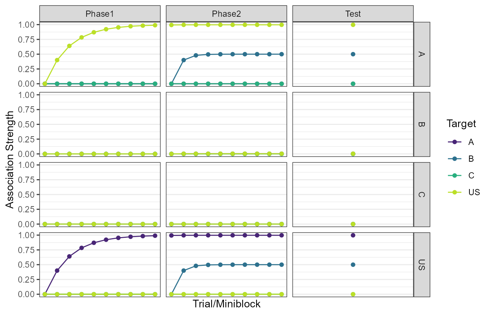
#>
#> $Exp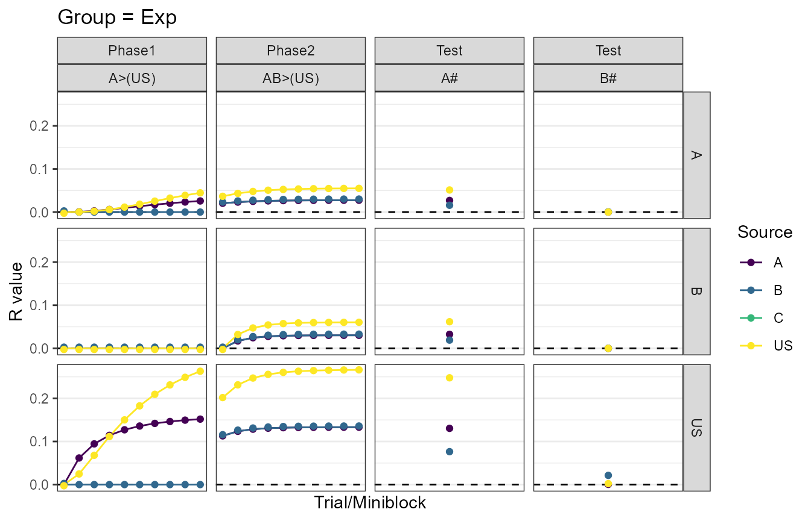
stimulus-specific responding (complex)
These are those complex plots. Here, the parsing changes a little bit, in order to allow comparison among the sources of responding. Now, each stimulus source is shown as a different color, and the vertical panels show different target stimuli.
plot(my_sim, type = "rs", simple = F)
#> $Control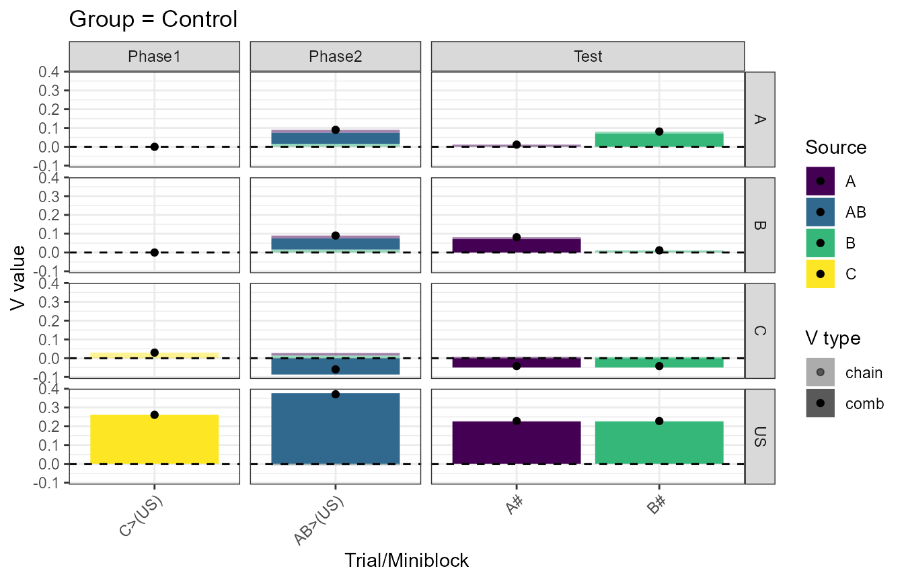
#>
#> $Exp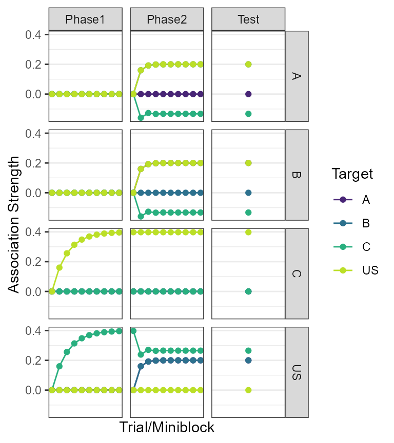
stimulus activations (bar)
stimulus activation plots take us a little deeper into the model. In these, the overall stimulus activation that we use to distribute responding is split into comb and chain activations. Comb activations represent activations due to reciprocal associations (e.g., the effect of US->A on A). Chain activations represent activations via indirect associative links.
Below, each bar is coloured based on the stimulus that generates the activation. The vertical panels denote the target stimulus. The x-axis now shows the trial types.
plot(my_sim, type = "acts", bar = T)
#> $Control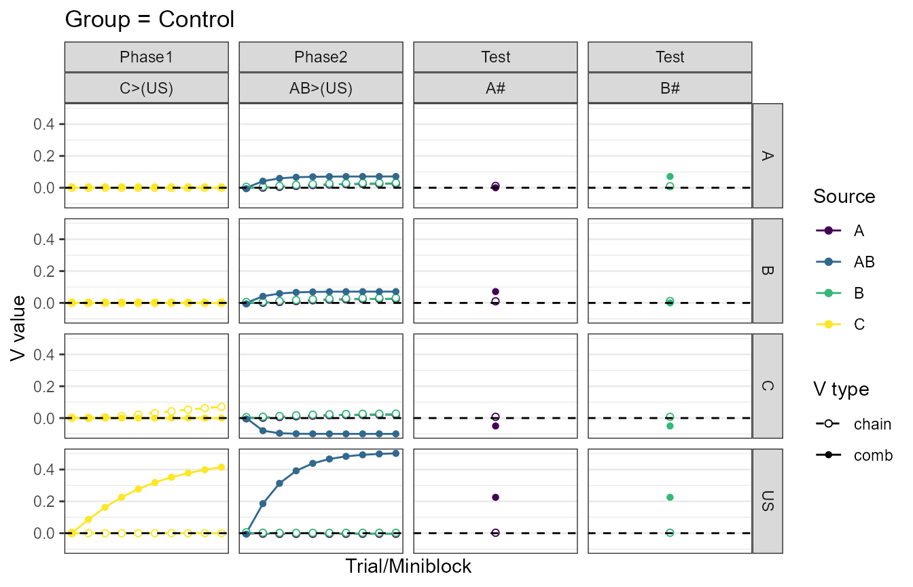
#>
#> $Exp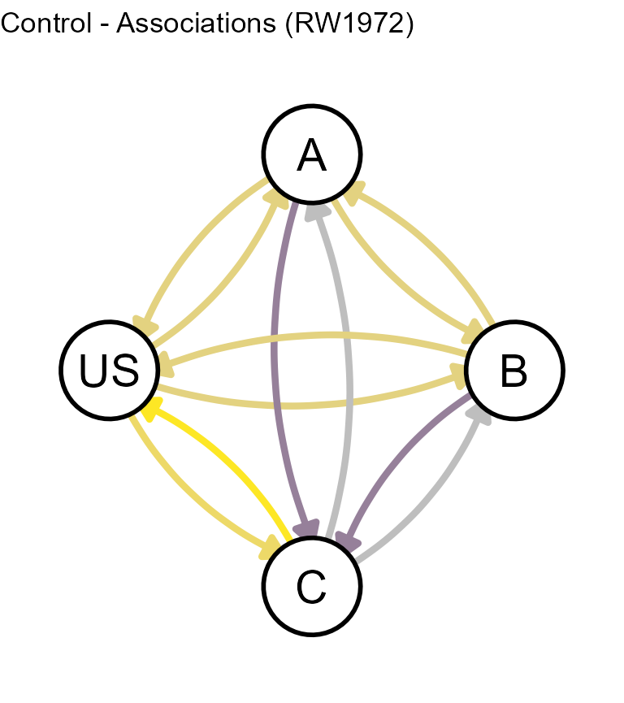
stimulus activations (curve)
Similar to above, but now the x-axis shows trial number, and the trial_types are embedded across horizontal panels.
plot(my_sim, type = "acts", bar = F)
#> $Control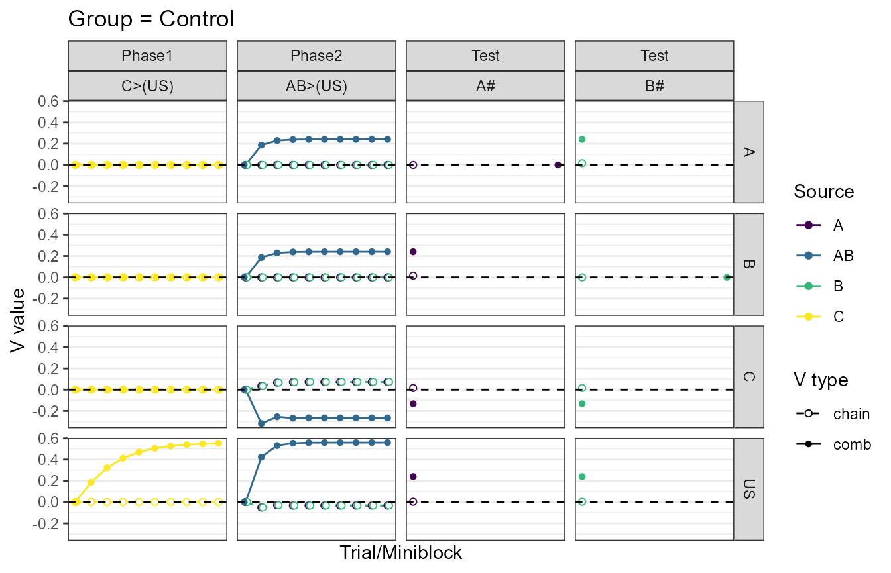
#>
#> $Exp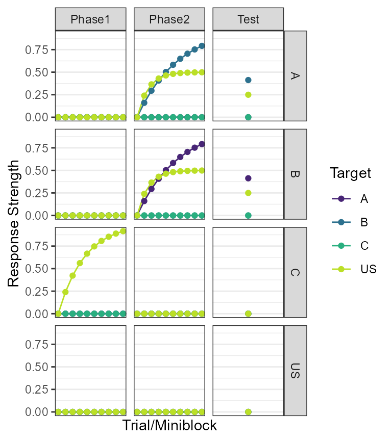
stimulus associations
Going even deeper now. These are the stimulus-stimulus associations that HeiDI uses to generate activations in the first place. Each vertical panel denotes a stimulus source. THe different colours, the target of the association.
plot(my_sim, type = "vs")
#> $Control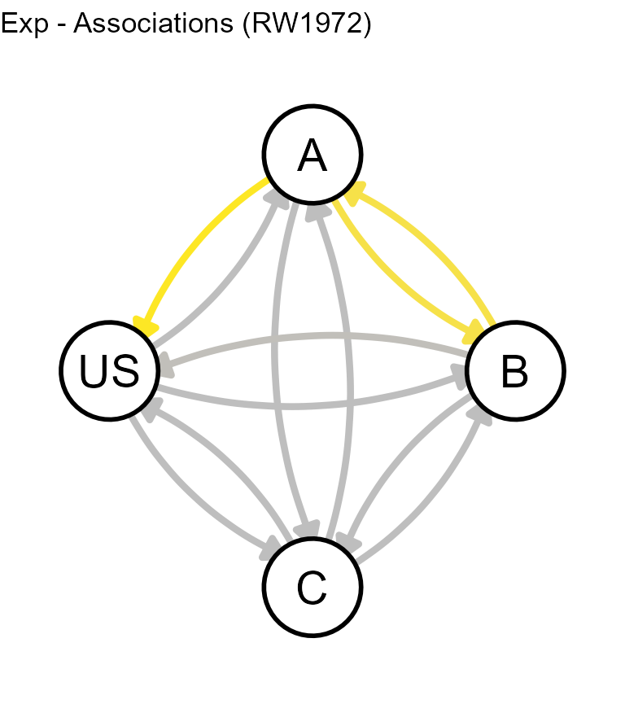
#>
#> $Exp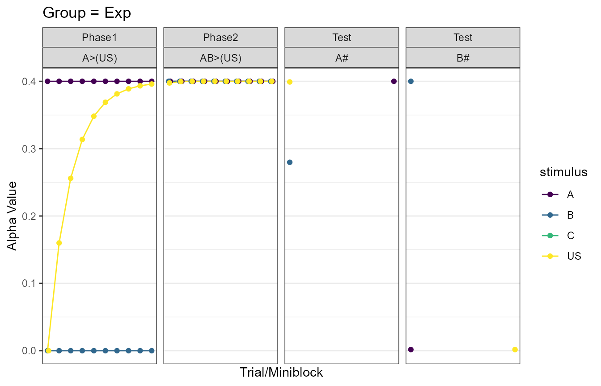
stimulus salience at expression
Venture here only if you’re ready. The plots below show the stimulus saliencies at the moment of expression.
plot(my_sim, type = "as")
#> $Control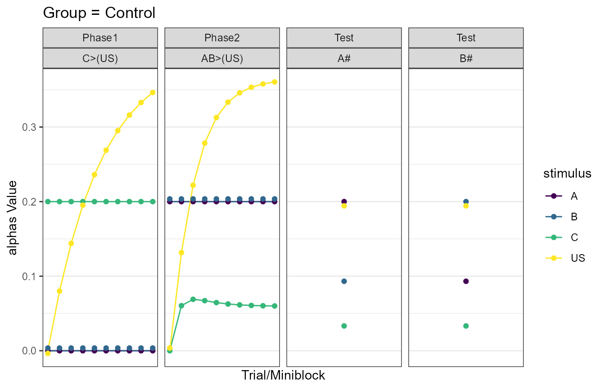
#>
#> $Exp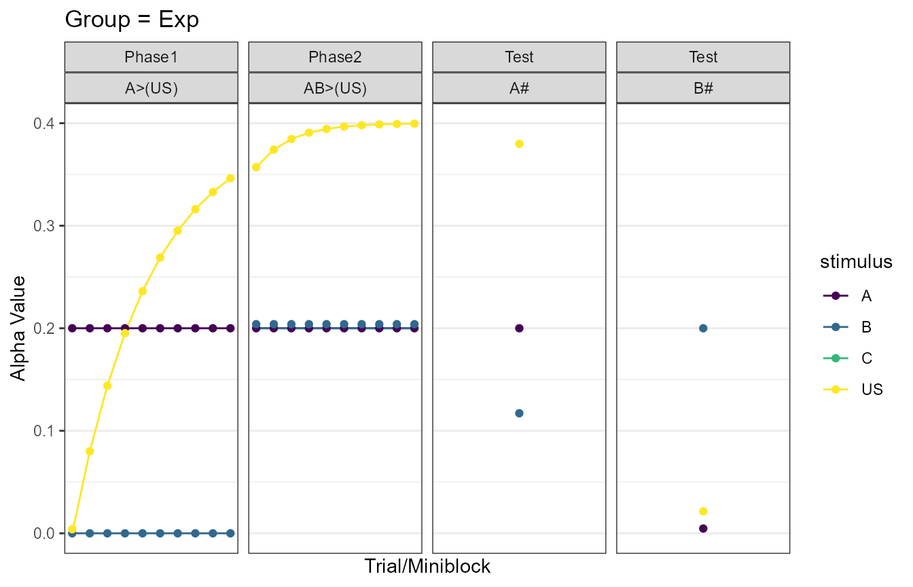
Graphing
You can also take a look at the state of the model’s associations at
any point during training, using the function
make_graphs.
my_graph_opts <- get_graph_opts("small")
graph(my_sim, t = 10, graph_opts = my_graph_opts)
#> $Control
#>
#> $Exp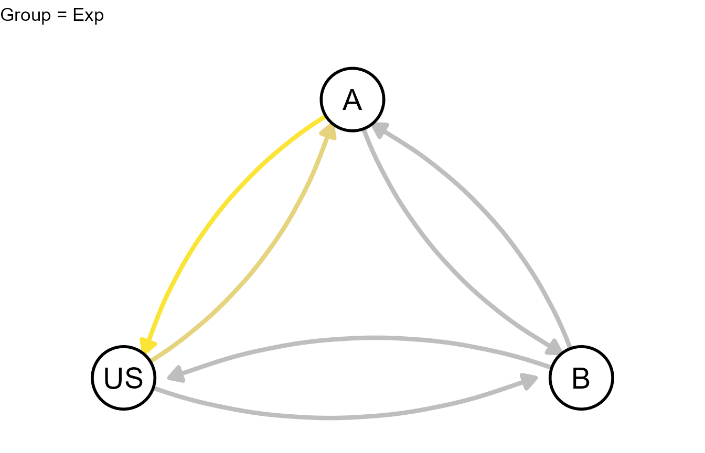